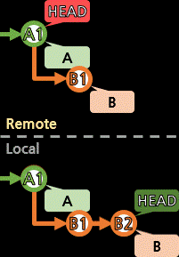

[push]

로컬의 브랜치와 커밋을 리모트 저장소로 업로드한다.
로컬의 커밋들은 아직 리모트에 반영되지 않은, 자신만의 것들도 있다.
이런 커밋들을 리모트에 일치시키도록 올려보내는 것이 push 과정이다.
push는 브랜치 단위로 이루어진다.
> git checkout
Your branch is up to date with 'origin/a01'.<---- 리모트브랜치와 연동되어 있을 때만 응답이 있음
git checkout을 통해 로컬브랜치가 연동된 리모트브랜치를 알 수 있다.
만약 아무 반응도 없다면, 아직 연동되지 않은 상태이고, push할 수 없다.
> git push
fatal: The current branch z01 has no upstream branch.<---- 아직 upstream branch가 설정되어 있지 않음
...
두 가지 방법이 가능한데,
1. 새로운 리모트브랜치를 만들어 연동시키는 것
2. 기존의 리모트브랜치에 연동시키는 것
이 있겠다.
[방법2를 보기 전에 잠깐 생각]
작업 컴퓨터를 옮기는 과정에서 원래 사용하던 브랜치를 사용하려는 것이 아니라면,
여러 사용자가 한 리모트브랜치에서 작업하는 상황이 될 수 있다.
다른 누군가 push 이력이 있을 경우,
내가 최신(up to date)이 아니게 되고
pull(fetch+merge) 작업을 한 후 push를 할텐데,
이걸 한 리모트브랜치를 같이 사용하는 모두가 매번 push할 때마다 해줘야하는 불편한 상황이 발생할 수 있다.

위 같은 처리를 매번 해줘야할 수도 있다...
로컬에서 커밋을 만들 때마다 미리 pull(fetch+merge)를 하고 작성한대도 상황은 별반 다르지 않다.

브랜치는 적극 활용하자.
브랜치의 전략은 [branch]의 브랜치 사용 전략 접은글을 참고.
> git branch -u 리모트브랜치 로컬브랜치
> git branch -u origin/a01 a01
Branch 'a01' set up to track remote branch 'a01' from 'origin'.
> git branch --set-upstream-to=리모트브랜치 로컬브랜치
> git branch --set-upstream-to=origin/a01 a01
Branch 'a01' set up to track remote branch 'a01' from 'origin'.
위의 펼쳐보기에서 생각을 해보고, 기존 리모트브랜치가 필요한 상황이 맞다면 사용한다.
git branch만으로 로컬브랜치들을 조회할 수 있다.
git branch -r로는 리모트브랜치를 볼 수 있고,
git branch -a로 전체 브랜치를 볼 수 있다.
> git branch -a
* a01<---- 현재 작업 중인 로컬브랜치 표시
main
remotes/origin/HEAD -> origin/main<---- origin 원격저장소가 현재 origin/main 브랜치를 가리키고 있음
remotes/origin/a01
remotes/origin/main
└─── 리모트브랜치는 저장소별명(origin)이 붙음
방법1은 새로운 리모트브랜치로 연동시키는 것이다.
로컬브랜치에서 특정 리모트브랜치의 구조를 따르고 있었어도 상관없다.
새로운 리모트를 만들 때, 공통되는 커밋들을 경유한 경로로 잘 만들어준다.
(잘 모르겠다면 [개념]에서 커밋이 브랜치에 종속적이지 않음을 보자)
> git push --set-upstream 저장소명 새_리모트브랜치
> git push -u 저장소명 새_리모트브랜치
> git push -u origin a01
Enumerating objects: 4, done.
Counting objects: 100% (4/4), done.
Delta compression using up to 8 threads
Compressing objects: 100% (2/2), done.
Writing objects: 100% (3/3), 272 bytes | 272.00 KiB/s, done.
Total 3 (delta 0), reused 0 (delta 0)
remote:
remote: Create a pull request for 'a01' on GitHub by visiting:
remote: https://github.com/BlackdeerY/example/pull/new/a01
remote:
To https://github.com/BlackdeerY/example.git
* [new branch] a01 -> a01
Branch 'a01' set up to track remote branch 'a01' from 'origin'.
> git checkout
Your branch is up to date with 'origin/a01'.<---- 리모트브랜치와 연동되어 있을 때만 응답이 있음
이제는 git checkout을 하면 응답이 있을 것이다.
리모트로 반영시키는 push를 봤으니,
이제는 리모트의 최신 상황을 가져오는 [fetch 및 pull(fetch+merge)]를 보자.